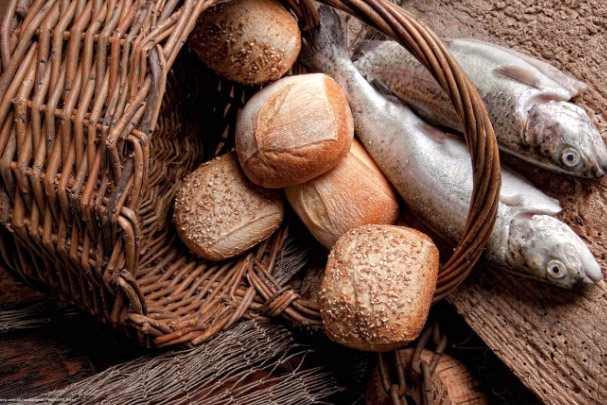

Modelo de Formatação
Leitura do Dia
18º Domingo Do Tempo Comum
(Verde - ofício dominical comum)
2 de Agosto de 2020
Leitura Orante do Evangelho
Ouça o áudio da oração e reflexão do padre Francisco das Chagas


Oração do dia
Manifestai, ó Deus, vossa inesgotável bondade para com os filhos e filhas que vos imploram e se gloriam de vos ter como criador e guia, restaurando para eles a vossa criação, e conservando-a renovada. Por nosso Senhor Jesus Cristo, vosso Filho, na unidade do Espírito Santo.
Leitura: Is 55,1-3
Assim diz o Senhor: 1A vós todos que estais com sede, vinde às águas; vós que não tendes dinheiro, apressai-vos, vinde e comei, vinde comprar sem dinheiro, tomar vinho e leite, sem nenhuma paga. 2Por que gastar dinheiro com outra coisa que não o pão, desperdiçar o salário senão com satisfação completa? Ouvi-me com atenção, e alimentai-vos bem, para deleite e revigoramento do vosso corpo. 3Inclinai vosso ouvido e vinde a mim, ouvi e tereis vida; farei convosco um pacto eterno, manterei fielmente as graças concedidas a Davi. - Palavra do Senhor.
Salmo Responsorial: Sl 144,8-9.15-16.17-18 (R.cf.16)
Vós abris a vossa mão e saciais os vossos filhos.
!
8Misericórdia e piedade é o Senhor, ele é amor, é paciência, é compaixão. 9O Senhor é muito bom para com todos, sua ternura abraça toda criatura.
Vós abris a vossa mão e saciais os vossos filhos. !
15Todos os olhos, ó Senhor, em vós esperam e vós lhes dais no tempo certo o alimento; 16vós abris a vossa mão prodigamente e saciais todo ser vivo com fartura.
Vós abris a vossa mão e saciais os vossos filhos. !
17É justo o Senhor em seus caminhos, é santo em toda obra que ele faz. 18Ele está perto da pessoa que o invoca, de todo aquele que o invoca lealmente.
Vós abris a vossa mão e saciais os vossos filhos. !Leitura: Rm 8,35.37-39
Irmãos: 35Quem nos separará do amor de Cristo? Tribulação? Angústia? Perseguição? Fome? Nudez? Perigo? Espada? 37Em tudo isso, somos mais que vencedores, graças àquele que nos amou! 38Tenho a certeza que nem a morte, nem a vida, nem os anjos, nem os poderes celestiais, nem o presente nem o futuro, nem as forças cósmicas, 39nem a altura, nem a profundeza, nem outra criatura qualquer, será capaz de nos separar do amor de Deus por nós, manifestado em Cristo Jesus, nosso Senhor. - Palavra do Senhor.
Evangelho: Mt 14,13-21
Naquele tempo, 13Quando soube da morte de João Batista, Jesus partiu e foi de barco para um lugar deserto e afastado. Mas quando as multidões souberam disso, saíram das cidades e o seguiram a pé. 14Ao sair do barco, Jesus viu uma grande multidão. Encheu-se de compaixão por eles e curou os que estavam doentes. 35Ao entardecer, os discípulos aproximaram-se de Jesus e disseram: 'Este lugar é deserto e a hora já está adiantada. Despede as multidões, para que possam ir aos povoados comprar comida!' 16Jesus porém lhes disse: 'Eles não precisam ir embora. Dai-lhes vós mesmos de comer!' 170s discípulos responderam: 'Só temos aqui cinco pães e dois peixes.' 18Jesus disse: 'Trazei-os aqui.' 19Jesus mandou que as multidões se sentassem na grama. Então pegou os cinco pães e os dois peixes, ergueu os olhos para o céu e pronunciou a bênção. Em seguida partiu os pães, e os deu aos discípulos. Os discípulos os distribuíram às multidões. 20Todos comeram e ficaram satisfeitos, e dos pedaços que sobraram, recolheram ainda doze cestos cheios. 21E os que haviam comido eram mais ou menos cinco mil homens, sem contar mulheres e crianças. - Palavra da Salvação.
Leituras do mês
TAGS
missao Amazonia evengel covid-19 indigenas novica papa francisco
Destaques
Província Stella Matutina
Rua São Benedito, 2146 - Santo Amaro - São Paulo - SP |
Tel. (11) 5547-7222


Província Spiritus Divinae Sapientiae
Rua Arnaldo Janssen, 320 - Cara-Cara - Ponta Grossa - PR |
Tel. (42) 3326 4091